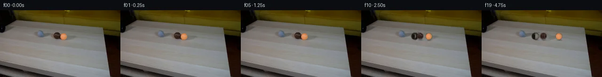
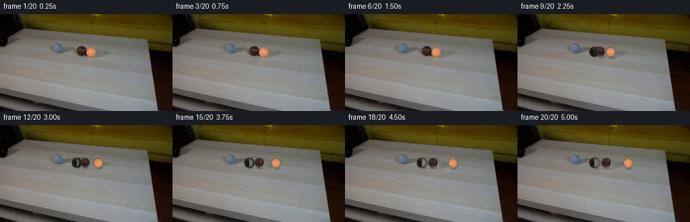
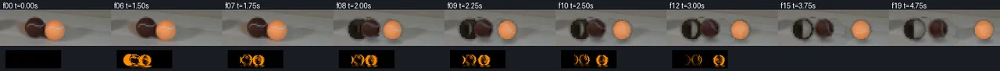

V0 · 初版 · 最终提交
![]()
Observable Generation Trace
把最终像素视频、Harness 冻结的每轮候选、真实工具事件和 Agent 自述放在同一页。可观测证据与模型自述分开标记，避免把“模型说它检查过”误当成真实工具调用。
![首帧]()
Static locked-off single-shot with fixed frame throughout filmed with constant framerate in real-time. The scene shows a realistic scientific demonstration. The scene only contains the described setup and actions. A light-colored coffee table with two tennis balls, one orange and one brown, placed near the center, back to back. A black pipe sits on the table on the left side and points towards the two tennis balls. The grey tennis ball rolls straight out of a black pipe from the left and hits the brown tennis ball.
首帧显示在左侧播放器初始画面。Track 权限、隔离和 tensor 一致性来自 run manifest，而不是 METHOD.md。
默认勾选初版和最终版；可选其他版本一起同步播放。仅检查图更新的连续重复快照已合并，回退旧视频仍保留为一次修订。
Observable events
来源：events.jsonl + run manifest
此 Track 禁止读取输出图片。逐轮预览由外部 Harness 自动冻结，只用于事后审计，生成 Agent 当时看不到这些页面。
Frozen candidates
每张图来自该 round 的真实 00 / 01 / 05 / 10 / 19 帧

pixels 971322eb304a1b60 · code 11b01695eb7780ef
--- previous/generate.py
+++ current/generate.py
@@ -0,0 +1,234 @@
+"""
+PixelWorld-Text case_0030.
+
+A grey tennis ball rolls straight out of the black pipe on the left and
+strikes the brown tennis ball parked at the mouth; the brown ball nudges
+forward and knocks the orange tennis ball away down the table.
+
+Frame 00 is the untouched first_frame.png (byte-exact). Frames 01-07 keep
+the first frame (grey ball is hidden inside the opaque pipe). From frame 08
+onward, ball sprites extracted from frame 00 (smooth sphere shading plus a
+rotating felt/seam detail layer) are composited at sub-pixel positions over a
+cleaned table background, with a repainted dark pipe mouth and soft contact
+shadows. Physics is a 1-D head-on chain with light rolling friction.
+
+All pixels come from local NumPy/Pillow/SciPy operations only.
+"""
+from pathlib import Path
+import numpy as np
+from PIL import Image, ImageDraw
+from scipy import ndimage
+import artifact_io
+
+WS = Path(__file__).resolve().parent
+H, W = 144, 256
+
+# ---------------------------------------------------------------- geometry
+R = 7.3 # ball radius (px)
+O0 = np.array([135.3, 56.0]) # orange ball center in frame 00
+B0 = np.array([121.0, 55.5]) # brown ball center
+MOUTH = np.array([113.7, 55.5]) # pipe mouth (end-plane) center
+PLANE_X = 113.5 # pipe end plane: sprite left of it stays hidden
+V0 = 14.0 # grey ball speed inside the pipe
+X_G0 = 82.0 # grey ball start (hidden in pipe)
+X_CONTACT = B0[0] - 2 * R # 106.4: grey center when it first touches brown
+
+# post-impact velocities (px/s) and rolling deceleration (px/s^2)
+VG, AG = 4.6, 1.2
+VB, AB = 5.0, 1.2
+VO = 11.0 # orange acceleration -1.0
+T_C = (X_CONTACT - X_G0) / V0 # 1.743 s
+
+
+def positions(t):
+ """Return grey/brown/orange center x at time t (s)."""
+ if t <= T_C:
+ return X_G0 + V0 * t, B0[0], O0[0]
+ tau = t - T_C
+ # stop each ball when its velocity reaches zero
+ tg = min(tau, VG / AG)
+ tb = min(tau, VB / AB)
+ gx = X_CONTACT + VG * tg - 0.5 * AG * tg ** 2
+ bx = B0[0] + VB * tb - 0.5 * AB * tb ** 2
+ ox = O0[0] + VO * tau - 0.5 * 1.0 * tau ** 2
+ return gx, bx, ox
+
+
+# ---------------------------------------------------------------- load frame 00
+im0 = np.array(Image.open(WS / 'first_frame.png').convert('RGB')).astype(np.float32)
+yy, xx = np.mgrid[0:H, 0:W]
+
+
+def disk(cx, cy, rad):
+ return (xx - cx) ** 2 + (yy - cy) ** 2 <= rad ** 2
+
+
+def extract_patch(cx, cy):
+ x0 = int(round(cx)) - 9
+ y0 = int(round(cy)) - 9
+ return im0[y0:y0 + 19, x0:x0 + 19].copy()
+
+
+# ------------------------------------------------------ sprite model
+def split_shading(patch):
+ """Split a ball patch into (coverage alpha, smooth shading, fine detail)."""
+ ly, lx = np.mgrid[0:19, 0:19]
+ ly = ly - 9
+ lx = lx - 9
+ d = np.sqrt(lx ** 2 + ly ** 2)
+ inside = d < 6.6
+ # extend the ball's own edge colour outward so the blur never mixes in
+ # background pixels from around the sprite
+ idx = ndimage.distance_transform_edt(~inside, return_distances=False,
+ return_indices=True)
+ filled = np.empty_like(patch)
+ for c in range(3):
+ ext = patch[..., c][tuple(idx)]
+ filled[..., c] = np.where(inside, patch[..., c], ext)
… diff truncated; 147 more lines …pixels 971322eb304a1b60 · code 8b87d7478afa4199
--- previous/generate.py
+++ current/generate.py
@@ -211,7 +211,7 @@
key = [0, 6, 7, 8, 9, 10, 12, 15, 19]
zx0, zx1, zy0, zy1 = 96, 176, 42, 68
zw, zh = zx1 - zx0, zy1 - zy0
-strip = Image.new('RGB', (zw * 2 * len(key), zh * 2 + zh + 6), (25, 28, 35))
+strip = Image.new('RGB', (zw * 2 * len(key), zh * 2 + zh + 24), (25, 28, 35))
draw = ImageDraw.Draw(strip)
for i, f in enumerate(key):
crop = Image.fromarray(frames[f, zy0:zy1, zx0:zx1]).resize(Final visual checks
Harness 保存的最终产物


Agent claims
以下文字由生成 Agent 撰写，不等同于工具证据
All measurements are numeric, taken from first_frame.png (256×144 RGB) with
NumPy/SciPy only (luminance, HSV masks, connected components, sampled RGB).
No image viewing tool was used.
Physics: 1D head-on chain along y≈55.5–56.0. Grey ball pre-positioned inside the pipe (center x=82, fully hidden), rolls right at 14 px/s. It reaches the mouth and contacts the brown ball (parked at the exit) when grey center = 121.0−2r = 106.4, i.e. t_c ≈ 1.743 s (between frames 7 and 8). Slightly inelastic chain collision with rolling friction after impact: grey post speed 4.6 px/s (rolls most of the way out, stops at x≈115.2), brown 5.0 px/s (stops x≈131.4), orange 11.0 px/s with −1.0 px/s² (still rolling at x≈163.9 at the end); grey/brown deceleration 1.2 px/s².
| frame | t (s) | grey x | brown x | orange x | event |
|---|---|---|---|---|---|
| 00 | 0.00 | 82.0 (hidden) | 121.0 | 135.3 | exact first frame |
| 01 | 0.25 | 85.5 | 121.0 | 135.3 | rolling inside pipe |
| 02 | 0.50 | 89.0 | 121.0 | 135.3 | |
| 03 | 0.75 | 92.5 | 121.0 | 135.3 | |
| 04 | 1.00 | 96.0 | 121.0 | 135.3 | |
| 05 | 1.25 | 99.5 | 121.0 | 135.3 | |
| 06 | 1.50 | 103.0 | 121.0 | 135.3 | approaching mouth (still hidden) |
| 07 | 1.75 | 106.4 | 121.0 | 135.4 | impact instant; frame holds |
| 08 | 2.00 | 107.5 | 122.3 | 138.1 | grey crescent at mouth, orange hit away |
| 09 | 2.25 | 108.6 | 123.4 | 140.8 | orange rolls away |
| 10 | 2.50 | 109.5 | 124.4 | 143.3 | grey rolling out |
| 11 | 2.75 | 110.4 | 125.4 | 145.9 | |
| 12 | 3.00 | 111.2 | 126.3 | 148.3 | |
| 13 | 3.25 | 112.0 | 127.2 | 150.7 | |
| 14 | 3.50 | 112.6 | 127.9 | 153.1 | |
| 15 | 3.75 | 113.2 | 128.6 | 155.4 | grey nearly stopped |
| 16 | 4.00 | 113.7 | 129.2 | 157.6 | |
| 17 | 4.25 | 114.2 | 129.8 | 159.7 | |
| 18 | 4.50 | 114.5 | 130.2 | 161.8 | brown nearly stopped |
| 19 | 4.75 | 114.8 | 130.6 | 163.9 | orange still rolling right |
first_frame.png; never repainted.pixels.npz (uint32 0xRRGGBB tensor), inspection sheet,
transition check, standalone player, METHOD.md.Task: grey tennis ball rolls straight out of the black pipe on the left and hits the brown tennis ball parked at the mouth; the brown ball nudges forward and the orange tennis ball is knocked away across the light coffee table.
All pixels were produced locally with NumPy / Pillow / SciPy. No external models, engines, images, or image-viewing tools were used; the first frame was analysed purely numerically (RGB/HSV masks, connected components, ASCII maps printed to the terminal).
OBSERVATION.md for the full numeric measurements and frame plan.For each ball a 19×19 patch around its measured center is taken:
Built once from frame 00:
frames/00.png is the byte-exact first_frame.png (verified by
np.array_equal).One-dimensional head-on chain on the mouth axis y≈55.5:
Per frame: contact-shadow ellipses (clipped to the mouth for the grey ball), then grey, brown, orange sprites alpha-composited with sub-pixel (1st-order shifted) placement at the integrated centers. Felt seam rotates by travelled distance / r. Frames 00–07 are the untouched first frame, since the grey ball remains hidden inside the opaque pipe until the impact instant.
artifact_io.save as frames/00–19.png,
pixels.npz (H×W×20 uint32 0xRRGGBB), inspection.png, and a standalone
index.html player.generate.py additionally writes transition_check.png (2× zoomed action
strip of key frames plus amplified consecutive-frame difference maps).frames/00.png is byte-identical to first_frame.png.pixels.npz uint32 tensor slice.